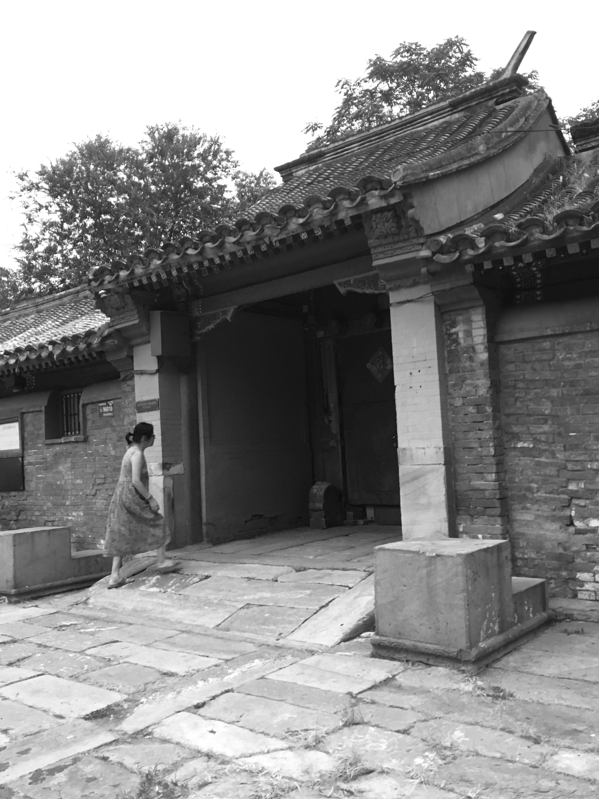

The gate of the Quadrangle symbolizes the ranking of the house and the status of the
owner. The shape, form and depth of the gate has strict regulations in ancient China. The
gate buildings are mostly located in the southeast corner and open to the
south. This is because in the Eight Diagrams, the southeast is in the "Sung" position,
which is the most auspicious.
The gate is the "face" of the household.
